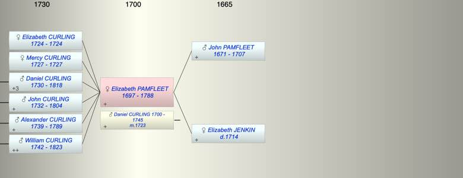

| [Index] |
| Elizabeth PAMFLEET (1697 - 1788) |
|  |
| b. 1697 at St Laurence |
| m. 23 Apr 1723 Daniel CURLING (1700 - 1745) at St Johns Margate |
| d. 31 Jan 1788 at St Laurence aged 91 |
| Parents: |
| John PAMFLEET (1671 - 1707) |
| Elizabeth JENKIN ( - 1714) |
| Children (6): |
| Elizabeth CURLING (1724 - 1724) |
| Mercy CURLING (1727 - 1727) |
| Daniel CURLING (1730 - 1818) |
| John CURLING (1732 - 1804) |
| Alexander CURLING (1739 - 1789) |
| William CURLING (1742 - 1823) |
| Events in Elizabeth PAMFLEET (1697 - 1788)'s life | |||||
| Date | Age | Event | Place | Notes | Src |
| 1697 | Elizabeth PAMFLEET was born | St Laurence | Note 1 | ||
| 23 Apr 1707 | 10 | Death of father John PAMFLEET (aged 36) | St Laurence | Note 2 | |
| 04 Feb 1714 | 17 | Death of mother Elizabeth JENKIN | St Laurence | ex MI | |
| 23 Apr 1723 | 26 | Married Daniel CURLING (aged 23) | St Johns Margate | Note 3 | |
| 1724 | 27 | Birth of daughter Elizabeth CURLING | St Laurence | Note 4 | |
| 1724 | 27 | Death of daughter Elizabeth CURLING | St Lawrence | Note 5 | |
| 1727 | 30 | Birth of daughter Mercy CURLING | St Laurence | Note 6 | |
| 1727 | 30 | Death of daughter Mercy CURLING | St Laurence | Note 7 | |
| 1730 | 33 | Birth of son Daniel CURLING | St Laurence | Note 8 | |
| 1732 | 35 | Birth of son John CURLING | St Laurence | Note 9 | |
| 1739 | 42 | Birth of son Alexander CURLING | St Laurence | Note 10 | |
| 1742 | 45 | Birth of son William CURLING | St Laurence | Note 11 | |
| 06 Mar 1745 | 48 | Death of husband Daniel CURLING (aged 45) | St Laurence | Note 12 | |
| 31 Jan 1788 | 91 | Elizabeth PAMFLEET died | St Laurence | aged 90 ex MI | |
| Created on a Mac™ using iFamily for Mac™ on 8 Oct 2023 |